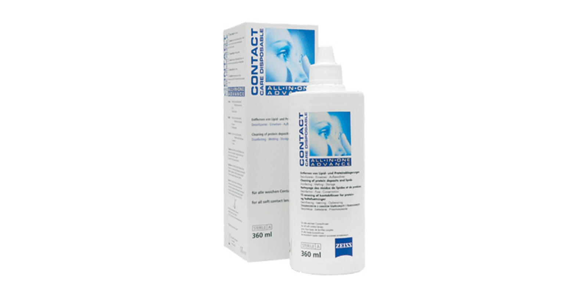
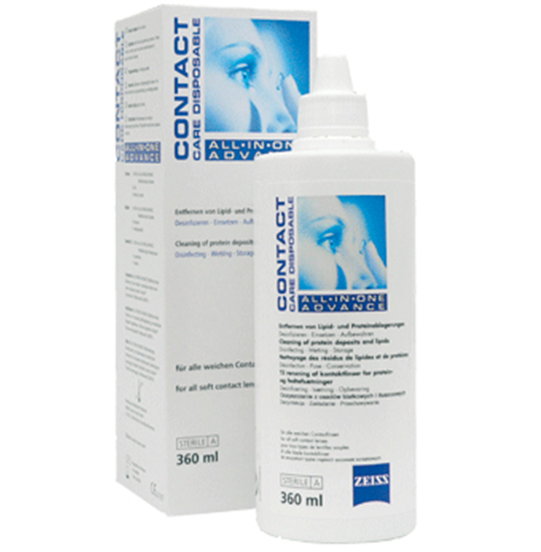
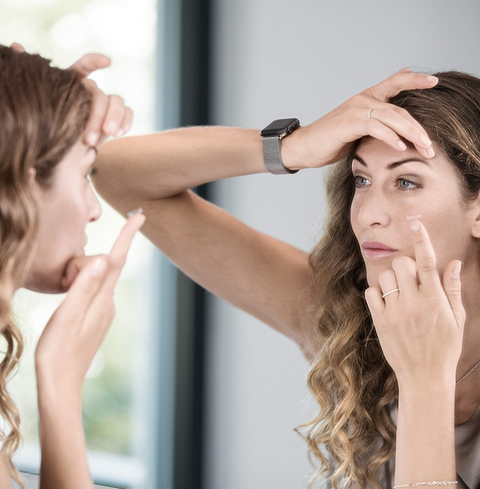

Contact lenses – little helpers
for clear vision.
Providing you with outstanding vision to
fit your unique look.
Whether for sports, holidays or cosmetic reasons: in many situations, ZEISS contact lenses are an attractive alternative to glasses. Contacts are fitted, accommodate nearly every type of visual impairment, are easy to use and feature a high degree of wearer comfort – and are even available in fashionable colours.

ZEISS contact lenses. The alternative to glasses.
One-of-a-kind – just like you. No matter if you wear daily, monthly or tinted contact lenses or if you're looking for the ideal cleaning agent: our comprehensive assortment offers you a large variety and all-in-one contact care solutions – all with legendary ZEISS quality.
ZEISS contact lenses are produced and distributed by Wöhlk.
Optician Search
Find a Zeiss Optician near you
First-rate material and an optimum fit. Leave nothing to chance.
There are three important features which affect the wearer comfort of contact lenses: the quality of the lens, a professional fitting and thorough care using high-quality cleaning, storage and rinsing agents. No matter what kind of contact lenses you choose, they should be fitted by your optician – just like your glasses. Your optician will determine your visual performance, measure the corneal surface of your eye, and check the condition of your tear film so that they can recommend the ideal contact lenses for you. Show off your eyes – for a long time to come.
Daily contact lenses.
For occasional wearers and anyone who enjoys convenience.
Enjoy maximum cleanliness without lens care with ZEISS Contact Day 1. These high-quality dailies are a comfortable alternative in everyday life, in particular for intermittent use when you're on vacation, playing sports or performing special tasks at work, e.g. in those situations where spectacle lenses might fog up. Practical and useful in many different situations – even if you only wear contacts from time to time.
Did you know that you can, for example, wear your dailies when swimming without any problem?
Monthly contact lenses.
Our solutions for 30 days of great vision.
Easy to use, high wearer comfort. Our ZEISS Contact Day 30 contact lenses provide you with excellent vision – from morning till night. They are available in four different versions:
ZEISS Contact Day 30 spheric:
Our general easy-to-wear standard contact lens.
ZEISS Contact Day 30 compatic:
features greater long-term tolerance and sustained wearer comfort – also recommended for air-conditioned rooms or if you suffer from dry eyes.
ZEISS Contact Day 30 air:
with above-average water content and good wetting properties. The silicone hydrogel material of this contact lens improves the oxygen supply to the eye, making it particularly well-suited e.g. for playing sports or during long periods of wear.
ZEISS Contact Day 30 toric:
Toric contact lenses for correcting an astigmatism.
Easily change the colour of your eyes – with tinted contact lenses.
Enjoy a new look in next to no time.
All ZEISS Contact Day 30 monthlies are available with eight different single or three-colour iris structures. The colour pigments are integrated into the polymer material.
5 Tips for Contact Lens weares

1. Many people aren't aware that their contact lenses must be fitted just as carefully as glasses. But keep in mind: a professional eye examination is also necessary for contact lens wearers. Perfect vision and excellent wearer tolerance – these two factors are indispensable for enjoying better quality of life.

2. Cleaning your contact lenses daily is an absolute must! Only use the cleaning agent recommended by your optician for cleaning, storing and rinsing off your contact lenses. Change the storage solution in your contact case every day and treat yourself to a new contact case every three to six months.
3. Wash your hands thoroughly before putting in or taking out your contact lenses.

4. Ask your optician during purchase if the contact lenses have good oxygen permeability and ensure optimum tear film exchange. Many people who wear contact lenses suffer from dry eyes. In this case, contact lenses with high oxygen permeability as well as special eye drops can improve wearer comfort. Ask your optician.

5. Glasses are still a must-have – and not only in an emergency. Give your eyes a break from time-to-time and wear a pair of traditional glasses. Here the same rule applies as for contacts: make sure your glasses are fitted at your optician.

Germs, viruses and bacteria don't stand a chance. Contact lens care – everything you need to know.
Cleanliness – that's the be-all and end-all for contact wearers! Insufficient hygiene or inadequate care can lead to eye infections caused by germs, viruses or bacteria. These not only are painful and reduce wearer comfort, but can also permanently damage your eyes. When it comes to cleanliness, contact lens wearers should make no compromises.
Here's a tip: our ZEISS All-in-one ADVANCE cleaning agent is compatible with all soft contact lenses while still being gentle and effective against germs, viruses and bacteria.
A winning team. The first Spectacle lenses for contact lens wearers.
Zeiss Energize Spectacle Lenses
These days every contact lens wearer has at least one pair of glasses to give their eyes a break after wearing contacts for hours on end. Enjoy more comfortable vision and refreshed eyes when switching to glasses after removing your contact lenses. ZEISS EnergizeMe spectacle lenses provide contact lens wearers with something more than a typical pair of glasses. These are specially optimised for contact lens wearers' visual behaviour and vision in the digital world.
Learn more about EnergizeMe Spectacle Lenses. Time to refresh your tired eyes.
